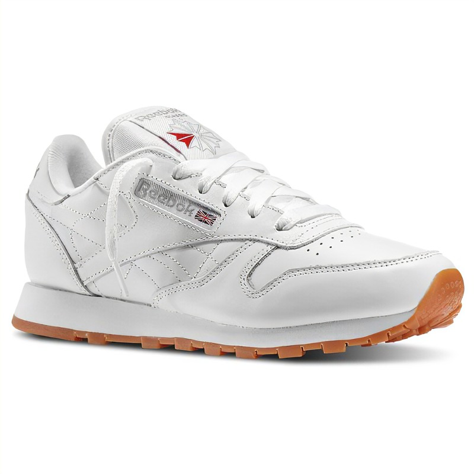
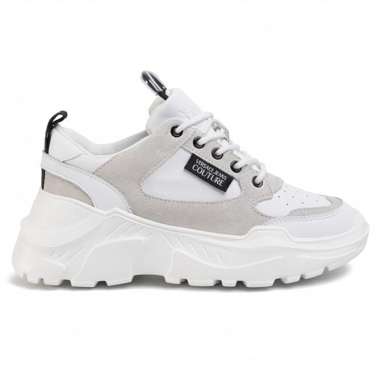

Historique
En géneral,les Sneakers sont des accessoires de modes portés par tout le monde. Notre entreprise "The Sneakers"a ouvert ses portes en 2020
et a fait le tour de l'Afrique de l'Ouest avec les encouragements des campagnes publicitaires de grandes marques spécialisée. Pour une utilisation urbaine,
les chaussures multi-sports , ou bien des modèles des années 1960-1970 sont les plus disponibles pour leur confort et leur style. Nos cibles sont principalements
des adolescents porteurs de la Sneaker comme chaussure de tous les jours.
Nos objectifs

The Sneaker a pour objectif de satisfaire les besoins spécifiques de la clientèle
Siège Sociale: Dakar/Senegal